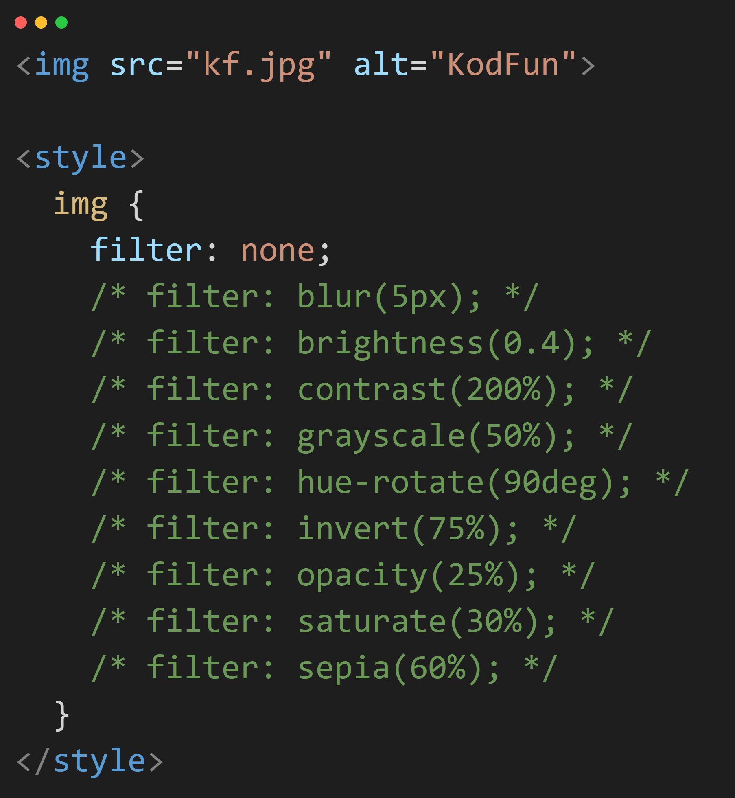

<h1>filter: <span id="filter">CSS FILTERS</span></h1>



<div>
  https://github.com/kodfun
</div>

<style>
  img {
    /* filter: none; */
    /* filter: blur(5px); */
    /* filter: brightness(0.4); */
    /* filter: contrast(200%); */
    /* filter: grayscale(90%); */
    /* filter: hue-rotate(90deg); */
    /* filter: invert(75%); */
    /* filter: opacity(25%); */
    /* filter: saturate(30%); */
    /* filter: sepia(60%); */
  }
</style>


<style>
  html, body {
    margin: 0;
    padding: 0;
    font-family: "Montserrat", sans;
  }
  h1 {
    text-align: center;
    color: white;
    font-size: 6rem;
  }

  body {
    background: linear-gradient(135deg, #2562A9, #142a44);
    display: flex;
    justify-content: center;
    flex-direction: column;
  }

  img {
    width: 80%;
    margin: 0 auto 5rem;
  }

  #logo {
    position: absolute;
    bottom: 0;
    right: 0;
    width: 250px;
    margin: 0;
  }

  div {
    color: white;
    text-align: center;
    font-size: 3rem;
    opacity: .65;
  }
</style>

<script>
  const txtFilter = document.getElementById("filter");
  const imgKod = document.getElementById("kod");
  const imgKf = document.getElementById("kf");
  const filters = ["none", "blur(5px)", "brightness(0.4)", "contrast(200%)", "grayscale(90%)", "hue-rotate(90deg)", "invert(75%)", "opacity(25%)", "saturate(30%)", "sepia(60%)"];

  let i = -1;

  function goster() {
    i++;
    if (i >= filters.length) return;
    txtFilter.textContent = filters[i];
    imgKod.src = `img/${i}.png`;
    imgKf.style.filter = filters[i];
  }

  setInterval(goster, 1500);
</script>